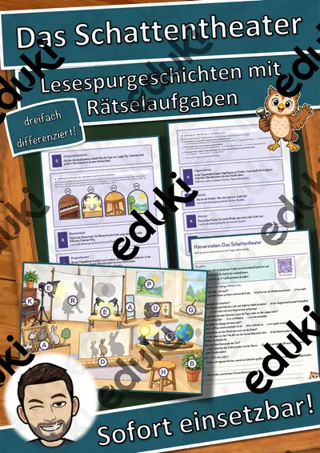
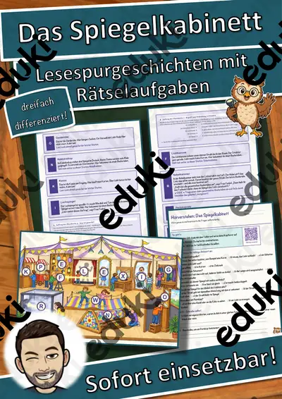
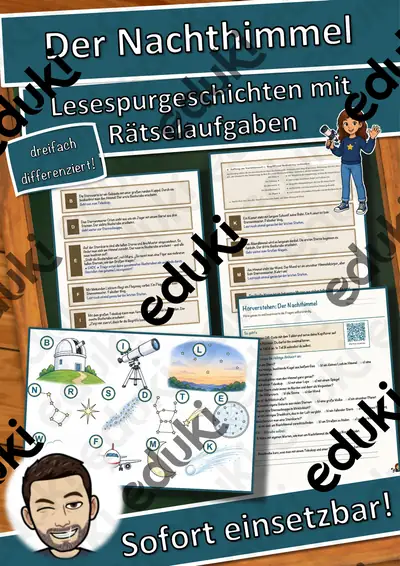
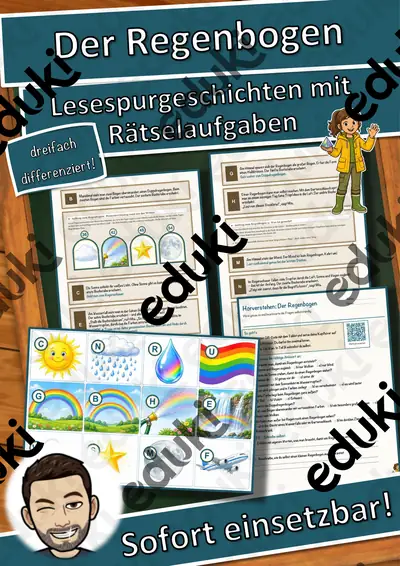
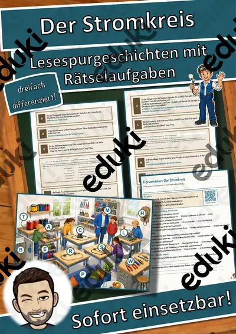
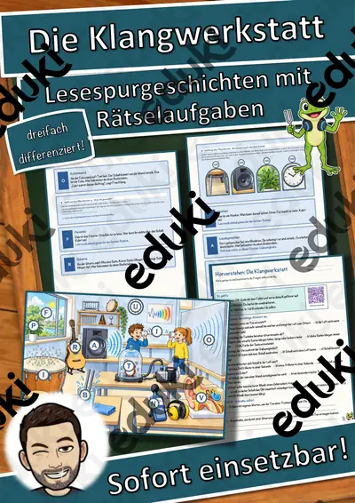

Das Containerschiff – Lesespurgeschichte mit Rätselaufgaben (Klasse 8)

Das Echolot – Lesespurgeschichte mit Rätselaufgaben (Klasse 8)

Das Elektroauto – Lesespurgeschichte mit Rätselaufgaben (Klasse 9)

Das Flugzeug – Lesespurgeschichte mit Rätselaufgaben (Klasse 8)

Das Licht und die Farben – Lesespurgeschichte mit Rätselaufgaben (Klasse 7)

Das Luftschiff – Lesespurgeschichte mit Rätselaufgaben (Klasse 8)

Das Mikroskop – Lesespurgeschichte mit Rätselaufgaben (Klasse 8)

Das Riesenrad – Lesespurgeschichte mit Rätselaufgaben (Klasse 9)

Das Schattentheater – Lesespurgeschichte mit Rätselaufgaben (Klasse 5)

Das Schiffshebewerk – Lesespurgeschichte mit Rätselaufgaben (Klasse 8)

Das Segelschiff – Lesespurgeschichte mit Rätselaufgaben (Klasse 8)

Das Spiegelkabinett – Lesespurgeschichte mit Rätselaufgaben (Klasse 5)

Das Stromnetz – Lesespurgeschichte mit Rätselaufgaben (Klasse 9)

Das Teleskop – Lesespurgeschichte mit Rätselaufgaben (Klasse 8)

Das Thermometer – Lesespurgeschichte mit Rätselaufgaben (Klasse 8)

Das U-Boot – Lesespurgeschichte mit Rätselaufgaben (Klasse 8)

Das Zeitlabor – wie Uhren die Zeit messen und warum wir umstellen – Lesespurgeschichte mit Rätselaufgaben (Klasse 8)

Der Airbag – Lesespurgeschichte mit Rätselaufgaben (Klasse 9)

Der Aufzug – Lesespurgeschichte mit Rätselaufgaben (Klasse 8)

Der Backofen – Lesespurgeschichte mit Rätselaufgaben (Klasse 8)

Der Bagger – Lesespurgeschichte mit Rätselaufgaben (Klasse 8)

Der Baukran – Lesespurgeschichte mit Rätselaufgaben (Klasse 8)

Der Blitzableiter – Lesespurgeschichte mit Rätselaufgaben (Klasse 9)

Der Dynamo – Lesespurgeschichte mit Rätselaufgaben (Klasse 9)

Der Elektromotor – Lesespurgeschichte mit Rätselaufgaben (Klasse 8)

Der Fahrraddynamo – Lesespurgeschichte mit Rätselaufgaben (Klasse 8)

Der Fallschirm – Lesespurgeschichte mit Rätselaufgaben (Klasse 8)

Der Fotoapparat – Lesespurgeschichte mit Rätselaufgaben (Klasse 8)

Der Generator – Lesespurgeschichte mit Rätselaufgaben (Klasse 9)

Der Haartrockner – Lesespurgeschichte mit Rätselaufgaben (Klasse 8)

Der Heißluftballon – Lesespurgeschichte mit Rätselaufgaben (Klasse 8)

Der Hubschrauber – Lesespurgeschichte mit Rätselaufgaben (Klasse 8)

Der Kompass – Lesespurgeschichte mit Rätselaufgaben (Klasse 8)

Der Kran – Lesespurgeschichte mit Rätselaufgaben (Klasse 8)

Der Kühlschrank – Lesespurgeschichte mit Rätselaufgaben (Klasse 8)

Der Laser – Lesespurgeschichte mit Rätselaufgaben (Klasse 9)

Der Lautsprecher – Lesespurgeschichte mit Rätselaufgaben (Klasse 9)

Der Magnetismus – Lesespurgeschichte mit Rätselaufgaben (Klasse 7)

Der Mond – Lesespurgeschichte mit Rätselaufgaben (Klasse 7)

Der Nachthimmel – Eine Reise zu den Sternen – Lesespurgeschichte mit Rätselaufgaben (Klasse 5)

Der Nebel – Lesespurgeschichte mit Rätselaufgaben (Klasse 8)

Der Rauchmelder – Lesespurgeschichte mit Rätselaufgaben (Klasse 8)

Der Regenbogen – Lesespurgeschichte mit Rätselaufgaben (Klasse 6)

Der Satellit – Lesespurgeschichte mit Rätselaufgaben (Klasse 8)

Der Schnellkochtopf – Lesespurgeschichte mit Rätselaufgaben (Klasse 8)

Der Staubsauger – Lesespurgeschichte mit Rätselaufgaben (Klasse 8)

Der Stromkreis – Lesespurgeschichte mit Rätselaufgaben (Klasse 7)

Der Toaster – Lesespurgeschichte mit Rätselaufgaben (Klasse 8)

Der Transformator – Lesespurgeschichte mit Rätselaufgaben (Klasse 9)

Der Turmdrehkran – Lesespurgeschichte mit Rätselaufgaben (Klasse 8)

Der Verbrennungsmotor – Lesespurgeschichte mit Rätselaufgaben (Klasse 9)

Der Viertaktmotor – Lesespurgeschichte mit Rätselaufgaben (Klasse 9)

Der Wasserkocher – Lesespurgeschichte mit Rätselaufgaben (Klasse 8)

Der Winterreifen – Lesespurgeschichte mit Rätselaufgaben (Klasse 8)

Die Achterbahn – Lesespurgeschichte mit Rätselaufgaben (Klasse 8)

Die Balkenwaage – Lesespurgeschichte mit Rätselaufgaben (Klasse 8)

Die Blockflöte – Lesespurgeschichte mit Rätselaufgaben (Klasse 8)

Die Bogenbrücke – Lesespurgeschichte mit Rätselaufgaben (Klasse 8)

Die Dampflokomotive – Lesespurgeschichte mit Rätselaufgaben (Klasse 8)

Die Dampfmaschine – Lesespurgeschichte mit Rätselaufgaben (Klasse 8)

Die Fahrradpumpe – Lesespurgeschichte mit Rätselaufgaben (Klasse 8)

Die Glasfaser – Lesespurgeschichte mit Rätselaufgaben (Klasse 9)

Die Glühlampe – Lesespurgeschichte mit Rätselaufgaben (Klasse 8)

Die Hängebrücke – Lesespurgeschichte mit Rätselaufgaben (Klasse 8)

Die Klangwerkstatt – Lesespurgeschichte mit Rätselaufgaben (Klasse 5)

Die Klappbrücke – Lesespurgeschichte mit Rätselaufgaben (Klasse 8)

Die Leuchtdiode – Lesespurgeschichte mit Rätselaufgaben (Klasse 9)

Die Lichterkette – Reihenschaltung und Parallelschaltung – Lesespurgeschichte mit Rätselaufgaben (Klasse 8)

Die Mikrowelle – Lesespurgeschichte mit Rätselaufgaben (Klasse 9)

Die Nähmaschine – Lesespurgeschichte mit Rätselaufgaben (Klasse 8)

Die Physik-Werkstatt – Lesespurgeschichte mit Rätselaufgaben (Klasse 7)

Die Rakete – Lesespurgeschichte mit Rätselaufgaben (Klasse 9)

Die Raumfahrt – Lesespurgeschichte mit Rätselaufgaben (Klasse 8)

Die Rolltreppe – Lesespurgeschichte mit Rätselaufgaben (Klasse 8)

Die Röntgenröhre – Lesespurgeschichte mit Rätselaufgaben (Klasse 9)

Die Sanduhr – Lesespurgeschichte mit Rätselaufgaben (Klasse 8)

Die Seilbahn – Lesespurgeschichte mit Rätselaufgaben (Klasse 8)

Die Solarzelle – Lesespurgeschichte mit Rätselaufgaben (Klasse 9)

Die Sonne – Lesespurgeschichte mit Rätselaufgaben (Klasse 9)

Die Stromrechnung – Lesespurgeschichte mit Rätselaufgaben (Klasse 10)

Die Taschenlampe – Lesespurgeschichte mit Rätselaufgaben (Klasse 8)

Die Thermoskanne – Lesespurgeschichte mit Rätselaufgaben (Klasse 8)

Die Waschmaschine – Lesespurgeschichte mit Rätselaufgaben (Klasse 8)

Die Wintersonnenwende – warum der Dezember so dunkel ist – Lesespurgeschichte mit Rätselaufgaben (Klasse 7)

Die Wärmedämmung – wo das Haus Wärme verliert – Lesespurgeschichte mit Rätselaufgaben (Klasse 9)

Die Wärmepumpe – Lesespurgeschichte mit Rätselaufgaben (Klasse 9)

Die Zentralheizung – Lesespurgeschichte mit Rätselaufgaben (Klasse 8)

Polarlichter – wenn der Himmel grün leuchtet – Lesespurgeschichte mit Rätselaufgaben (Klasse 8)

Richtig lüften im Winter – Luftfeuchtigkeit, Taupunkt und Schimmel – Lesespurgeschichte mit Rätselaufgaben (Klasse 9)

Schwimmen und Sinken – Lesespurgeschichte mit Rätselaufgaben (Klasse 7)

Warum Eis schwimmt – die Anomalie des Wassers – Lesespurgeschichte mit Rätselaufgaben (Klasse 7)
Lesespurgeschichten im Fach Physik
Physikalische Zusammenhänge werden begreifbar, wenn man sie abschreitet. Die Stationen sind Bauteile oder Stufen eines Vorgangs, die Aufgaben verlangen Rechnen und Begründen, und das Ergebnis entscheidet über den nächsten Schritt.
Jede Geschichte liegt in drei Niveaustufen vor, die sich in Textlänge, Satzbau und Aufgabenanspruch unterscheiden. Weg, Stationen und Lösungswort bleiben gleich, sodass alle Fassungen gleichzeitig in einer Klasse laufen können.
Themen auf dieser Seite
Beispiele aus dieser Sammlung: Der Heißluftballon · Der Bagger · Die Seilbahn · Der Hubschrauber · Das Elektroauto · Der Blitzableiter · Die Blockflöte · Der Rauchmelder.